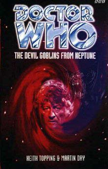

|
The Devil Goblins From Neptune
|
BASIC PLOT DOCTOR COMPANIONS MATERIALISATION CIRCUIT PREPARATORY READING CONTINUITY REFERENCES "And, when you've seen Cybermen marching down your street, there's a lot to be said for easy answers." The Invasion. "Let them play with their International Electromatics toys, their vid-phones and disposable transistors." The Invasion. Pg "Let Styles and that Texan jerk Alcott organise their conferences." Day of the Daleks, The Mind of Evil. Pg 10 "Brilliant career in Africa and Aden." We saw some of the Brigadier's career in Africa in Transit. Pg 16 "You could start by passing me that perigosto stick on the bench over there." The Green Death. Pg 17 "The station is using special equipment that you designed after the Auton incident." Spearhead from Space. Pg 19 "I'm always on the verge of leaving." This line was put in to explain why Liz left in The Scales of Injustice but is back with UNIT in this book. Pg 20 "I remember saying to Wellington one day - "Nosey", I said..." This misquotes Day of the Daleks. Pg 21 "You know, I'm reminded of the time I met Puccini in Milan..." The telemovie. Pg 23 "I wish we could afford one of those new IE remote-controlled TV sets." The Invasion. Pg 24 "I should warn you that I am a tenth dan master in all of the major disciplines: Venusian aikido, Saturnian kung-fu. I trained as a ninja on Quinnis in Galaxy Four." Inferno, Galaxy Four. Quinnis is one of the planets the Doctor and Susan visited prior to An Unearthly Child, as mentioned in The Edge of Destruction. Pg 31 "The reports were remarkably similar to those UNIT had received at the timeof the Cyber invasion." The Invasion. Pg 32 "As a favour to Ralph Cornish, who had recently been appointed to overall command of the British Space programme, UNIT were to provide security for a press luncheon" The Ambassadors of Death (but see Continuity Cock-Ups). Pg 33 "That song's obviously based on leaked information concerning the Carrington fiasco." The Ambassadors of Death. Pg 37 "Your Classified Action report on the Auton invasion was breathtaking." Spearhead from Space. Pg 38 "Some of the mopping up at the second Silurian chamber in Oregon was good work." This is the first we've heard of an Oregon champer, presumably opening up contemporaneous with events in Doctor Who and the Silurians. "I also partnered Bill Filer investigating the International Electromatics West Coast division." The Claws of Axos, The Invasion. Pg 43 "Bu the governments have snatched that away from them, sold them false dreams of utopia and plastic nightmares of deadly aliens." Spearhead from Space. Pg 49 "In my time I have been threatened by experts." The sixth Doctor says this line in The Twin Dilemma. Pg 54 "The Doctor leant forward, relaxing the muscles in his arms, just as Erich Weiss had shown him all those years ago." Erich Wise is the real name of Harry Houdini, who the Doctor mentions having taught him techniques in Planet of the Spiders. Pg 60 "If you're missing the next time the Autons invade or the Yeti terrorise central London, we'll be defenceless." Spearhead from Space, The Web of Fear. Pg 62 "Then the Cybermen marched down Noel Street towards Covent Garden" The Invasion. Pg 73 "The Doctor had given Trainor an insider's view of the Cyber invasion, the Nestene attack, the Eocene crisis, and the aborted Inferno project" The Invasion, Spearhead from Space, Doctor Who and the Silurians, Inferno. "I ran into him at Greg and Petra Sutton's wedding earlier in the year, but we didn't have much time to talk. Is he still with NASA?" Inferno. The novelisation of The War Machines explained the first Doctor's accorded access to the GPO Tower and WOTAN's control room by mentioning that his friend Ian had become a consultant in the American moon missions. The ground was prepared for Marter's explanation by the alternative origin story of David Whitaker's novelisation of The Daleks in which Ian was a rocket scientist and not a science teacher. "I met him and Barbara in London last month. I told him I hoped to meet you soon, and he said I should ask you about Vortis." The Web Planet. Pg 74 "How's their little boy?" Johnny Chess grows up to be mentioned in Timewyrm: Revelation and appear in The King of Terror and Byzantium! "Much of what we acheived is down to Rachel Jensen." Remembrance of the Daleks. Pg 75 "I mean, after the Carrington debacle, we've had to reassure them that we aren't all power-craxed megalomaniacs who want to rule the universe!" The Ambassadors of Death. Pg 77 "I was there, long ago of course. These days it's most inhospitable." Venusian Lullaby. Pg 100 "All Lethbridge-Stewart could remember about the year was being a young colonel, fresh from his first close encounter with alien beings, shooting a machine gun at Arabs." The Web of Fear. "They sat and began to talk about Aden, and Yetis in the Underground." The Web of Fear. Pg 110 "You can't expect them to keep coming out of the sewers next to St Paul's!" The Invasion. Pg 135 "It was Captain Munro, who had been under Lethbridge-Stewart's command during the Auton invasion." Spearhead from Space. Pgs 137-138 "My people have a rite, a psychic ability that allows the memories of a dying Gallifreyan to be transferred to another's mind prior to assimilation." We found out in The Deadly Assassin that the minds of all Gallifreyans are stored in the Matrix. Pg 139 "I noticed it the last time I was here, reporting on the Stahlman fiasco." Inferno. Pg 146 "We couldn't raise the Brigadier, and with Major Turner in Iceland and Major Cosworth on leave..." The Invasion, The Mind of Evil. "Yates had experienced similar shock after the Auton invasion." Spearhead from Space. Pg 162 "It had been Decker who had been among the first to track the trajectory of the Nestene mother ship the previous summer" Spearhead from Space. Pg 164 "The first twenty or so pages contained detailed eye-witness statements regarding various alien incidents, from the initial setting up of the organisation in the aftermath of the robot Yeti attack, through to recent events, like the Inferno project." The Web of Fear, Inferno. "A report from a Captain Turner on the Cyber invasion of London in the spring of 1969." Pg 168 Reference to Bill Filer (The Claws of Axos). Pg 169 "Yates had finally got through to New York using one of the Home Office's IE-pirated videophones" The Invasion. Pg 180 Reference to Jimmy Turner (The Invasion). Pg 184 "Take a man around the rear, Sergeant." This line also appears in The Highlanders. Pg 204 "Mind you, we said the same about Mars..." The Ambassadors of Death. Pg 234 "Meanwhile, on another aeroplane, hundreds of miles away, Brigadier Lethbridge-Stewart was thinking about how he had defeated the Cybermen." The Invasion. Pg 240 "Cybermen, Nestenes - we know all about your minor-league run-ins." The Invasion, Spearhead from Space. Reference to the Daleks. Pg 252 "That long triangular one is very like a Dalek warship I once saw on Aridius." Not a direct reference to The Chase, since the Daleks didn't use warships on Aridius in that story. Pg 253 "Look at all the IE stuff we have" The Invasion. Pg 267 "He stopped, remembering his trial." The War Games. OLD FRIENDS AND OLD ENEMIES Pg 18 The British Rocket Group appears here, having been mentioned in Remembrance of the Daleks. Pg 74 Similarly, the "Bernard" that Rachel Jensen referred to in Remembrance, intended to be an in-joke to Quatermass, is here Bernard Trainor of the British Rocket Group. Pg 135 Captain Munro (Spearhead from Space). NEW FRIENDS AND NEW ENEMIES Pg 128 Bob and Julia Franklin are seen in an interlude. They later appear in The Hollow Men, The King of Terror and Byzantium!. Captain Shuskin, Thomas Bruce, Major-General Hayes. The Waro. The Nedenah.
CONTINUITY COCK-UPS PLUGGING THE HOLES [Fan-wank theorizing of how to fix continuity cock-ups] FEATURED ALIEN RACES Pgs 229-230 The Nedenah, Grey-like aliens with domed heads and slender arms. FEATURED LOCATIONS Pg 6 Manhatten, the US. Pg 12 Northampton. Pg 15 London. Pg 33 Cambridge. Pg 96 East Germany. Pg 99 Geneva, Switzerland. Pg 107 A Soviet base (exact location unknown). Pg 141 Space (in a flashback vision). Pg 158 The south coast of England. Pg 158 A hovercraft. Pg 162 The Columbia plateau, Oregon, the US. Pg 191 Salisbury Plain. Pg 195 A beach (probably the US). Pg 227 Australia. Pg 235 Ranch 51, Nevada. Pg 235 Groom Lake air force base. Pg 238 Las Vegas. A variety of aeroplanes and helicopters. It's July 1970, according to pages 275 and 282. The epilogue takes place in March 1971. IN SUMMARY - Robert Smith? |
|
 |